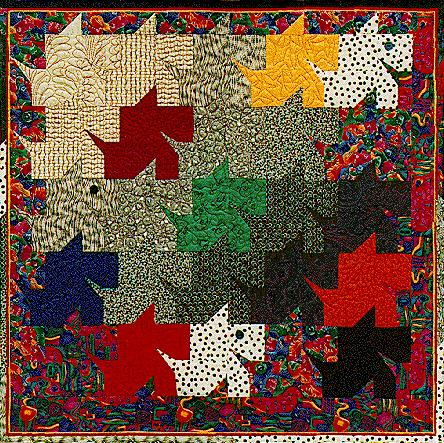

Tessellations for TiggerTessellations for Tigger
Tessellations for TiggerTessellations for Tigger
| #P104..........$7.95 30" X 30"
My son, Quinton, came home from school one day with a tessellated art project. I thought it looked an awful lot like a scottie dog. I knew that with a few adjustments it would make a wonderful foundation pieced quilt. A year later we got an adorable tabby kitten. He had been born into a house with two BIG dogs. Well, by the time we adopted him, he was sure that he was a dog. I knew this would be the perfect quilt for our new kitten, Tigger. Tigger loves any quilt I'm making, no matter who it's for. A child of any age, or maybe your cat, would love to own this playful quilt. Pattern includes full size drawings for foundation paper piecing this scottie dog quilt. |
 Copyright 1994, Jane L. Kakaley |